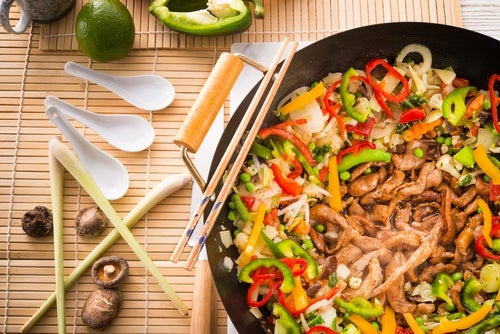

Recetas
Rapido y simple
Wok de pollo con verduras
Discripcion: El wok de pollo con verduras es una de las recetas de pollo más fáciles y rápidas que puedes preparar en casa. Te voy a enseñar cómo hacer un wok con pollo con cualquier vegetal que tengas en casa.
- Ingredientes:
- 2 pechugas de pollo medianas
- ½ Cebolla
- 1 Pimiento rojo
- 1 Zanahoria mediana
- 1 Cebollino
- Algunas judías verdes
- 1 diente de ajo
- Aceite vegetal
- Sal
- Pimienta
- Salsa de soja
- Semillas de sésamo
Calorías 350kcal
Pasta con champiñones en salsa blanca

Discripcion: Esta rica pasta con champiñones en salsa blanca es una gran alternativa gourmet para disfrutar en cualquier época del año, ¡pruébala tú misma!
- Ingredientes:
- 400 g. de champiñones frescos
- 1 lata de leche evaporada
- 1 manojo de perejil picado
- 1 cebolla picada
- Aceite de oliva al gusto
- 1 ajo
- 1 pizca de sal y pimienta
- 250 g. de pasta corta
- 50 g. Queso parmesano al gusto
Calorías 390kcal
Ensaladas
Ensalada César de pollo
Discripcion: Prepara la clásica receta de ensalada César con lechugas variadas, queso y pechuga de pollo.
- Ingredientes:
- 200 g de lechuga romana picada o una mezcla de lechugas de hoja verde
- 100 g Tomates cereza
- 150 g de pollo asado, a la plancha o empanado a trozos
- Una taza de costrones de pan
- Taquitos de queso al gusto o queso rallado
- Aceite de oliva
- 1 diente de ajo
- Aceite vegetal
- Sal
- 1 diente de ajo
- Salsa César para aderezar
Calorías 521kcal
Ensalada de atún y aguacate
Discripcion: Esta rica pasta con champiñones en salsa blanca es una gran alternativa gourmet para disfrutar en cualquier época del año, ¡pruébala tú misma!
- Ingredientes:
- 500 g de atún fresco en cubos
- 4 pepinillos rebanados
- 1 aguacate en gajos
- 1 cda. de ajonjolí
- 4 cdas. de soya
- 2 cdas. de aceite de ajonjolí
- 5 cdas. de jugo de limón
Calorías 370kcal
Sopas
Sopa de picadillo de pollo
Discripcion: Esta sopa de picadillo de pollo es perfecta como primer plato de cualquier comida, aunque en casa también nos gusta tomarla para cenar, bien calentita.
- Ingredientes:
- 1/2 Pollo
- 2 zanahorias
- 1 puerro
- 1 hueso salado
- 2 huevos
- Jamón serrano
- Fideos cabello de ángel
- Unas hojas de hierbabuena
Calorías 230kcal
Sopa de pescado
Discripcion: Esta sopa de pescado tiene como base un fumet o caldo de pescado casero que te vamos a enseñar a preparar de forma súper sencilla.
- Ingredientes:
- 1 litro caldo de pescado
- 150 g de cabezas y cuerpos de gambas o langostinos
- 500 g de raspas y cabezas de rape, merluza o similar.
- 1 zanahoria
- 1 puerro
- 2 dientes de ajo.
- 2 cucharadas soperas de salsa de tomate
- 2 litros de agua
- Aceite de oliva
- 50 g de pan en rodajas finas.
- sal